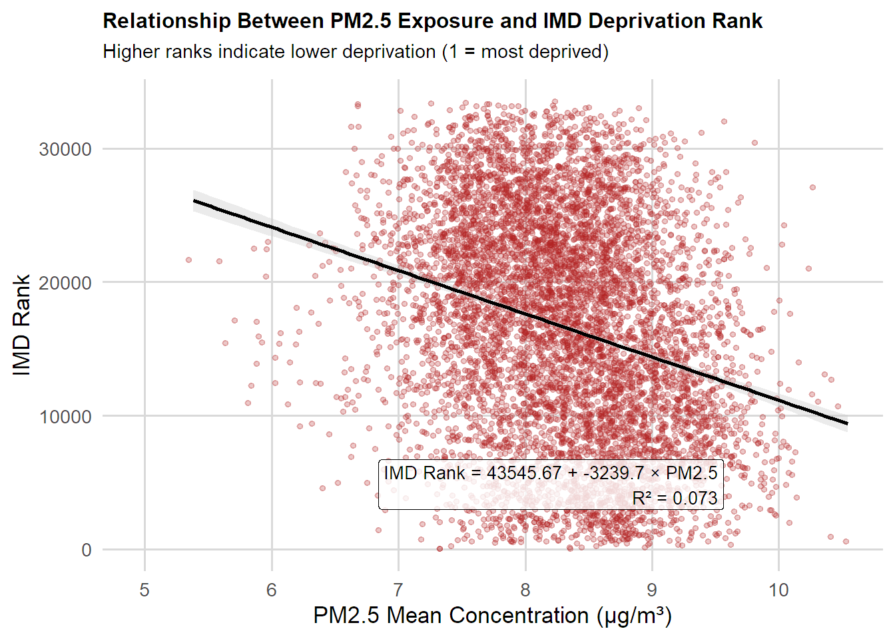
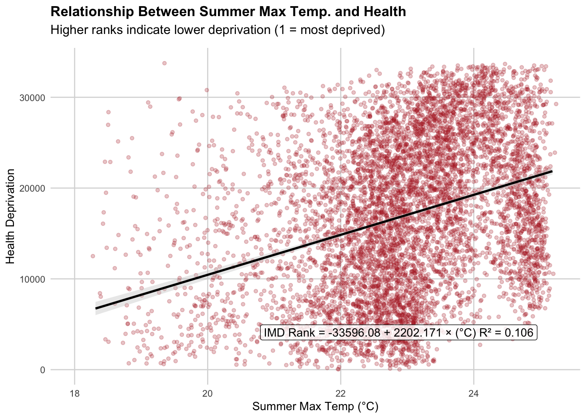

# Core data handling and plotting
library(tidyverse) # Data manipulation + ggplot2
library(dplyr) # (Loaded with tidyverse, listed here for clarity)
library(readr) # Fast reading of CSVs
library(readxl) # Reading Excel files
# Spatial data and mapping
library(sf) # Simple Features: work with spatial data
library(tmap) # Thematic mapping
library(geojsonsf) # Convert between GeoJSON and sf objects
library(osmdata) # Access OpenStreetMap data
library(basemapR) # Static basemaps for mapping
# Plot styling and layout
library(viridis) # Colorblind-friendly palettes
library(cowplot) # Combining and arranging plots
# File system utilities
library(fs) # File and directory helpersExplore datasets with R/Python
Goal: Explore Imago datasets programmatically and replicate analyses across products.
Training Approach: The instructor will first demonstrate the workflow using one example dataset. Participants will then repeat the steps with alternative dataset combinations to practice transferring the workflow across products.
We’ll start the demo with PM2.5 pollution data and IMD 2025. Once you’re comfortable with the workflow, feel free to try it out on other datasets—for example, heat indicators, flood risk, or particular IMD domains—to explore different kinds of questions.
Installing packages
We will start by loading core packages for working with spatial data. See detailed description of R.
Load MSOA boundary data and pollution data product
MSOA boundary data can be downloaded from the Imago data catalogue
msoa_uk <- read_sf("./data/UK_MSOA_IZB_SDZ.shp")Load MSOA boundary data and Imago product, also from the Imago data catalogue
# Load PM2.5 concentration data
pm25 <- read.csv("./data/PM25_concentration_MSOA_2023.csv")Merge
Merge and then plot variable pm2.5_mean with ggplot.
msoa_pm25 <- msoa_uk %>%
left_join(pm25, by = c("dt_zn_c" = "dt_zn_c"))Basic summary statistics for pm2.5_mean
summary(msoa_pm25$pm2.5_mean) Min. 1st Qu. Median Mean 3rd Qu. Max. NA's
4.891 7.388 8.010 7.973 8.602 10.543 6 Useful for understanding tail behaviour and skewness.
quantile(msoa_pm25$pm2.5_mean, probs = seq(0, 1, 0.1), na.rm = TRUE) 0% 10% 20% 30% 40% 50% 60% 70%
4.891121 6.862401 7.242492 7.513803 7.758437 8.009963 8.242344 8.488465
80% 90% 100%
8.724281 9.064899 10.543109 Plot variable by local area boundary
Here we visualise pollution concentration with ggplot.
ggplot(msoa_pm25) +
geom_sf(aes(fill = pm2.5_mean), colour = NA) +
scale_fill_viridis_c(
option = "magma",
name = "PM2.5 (µg/m³)",
direction = 1,
breaks = scales::pretty_breaks(6) # clean, human-friendly scale
) +
labs(
title = "PM2.5 Mean Concentration by MSOA",
subtitle = "Higher values indicate poorer air quality",
caption = "Source: Imago & UK MSOA boundaries"
) +
theme_minimal(base_size = 12) +
theme(
plot.title = element_text(face = "bold"),
plot.subtitle = element_text(size = 10, colour = "#555555"),
legend.position = "right",
panel.grid.major = element_blank(),
panel.grid.minor = element_blank(),
plot.caption = element_text(hjust = 0.5) # centre caption
)
Merge with the Index of Multiple Deprivation
The English Indices of Deprivation 2025 were recently published.
# Temp file location
tmp_file <- tempfile(fileext = ".xlsx")
# 1. Download IMD 2025 file
download.file(
url = "https://assets.publishing.service.gov.uk/media/691dece32c6b98ecdbc500d5/File_1_IoD2025_Index_of_Multiple_Deprivation.xlsx",
destfile = tmp_file,
mode = "wb"
)
# 2. Import IMD25 sheet
imd <- read_excel(tmp_file, sheet = "IMD25")
# 3. Delete the temporary file
unlink(tmp_file)
# Inspect column names to identify the join key
names(imd)[1] "LSOA code (2021)"
[2] "LSOA name (2021)"
[3] "Local Authority District code (2024)"
[4] "Local Authority District name (2024)"
[5] "Index of Multiple Deprivation (IMD) Rank (where 1 is most deprived)"
[6] "Index of Multiple Deprivation (IMD) Decile (where 1 is most deprived 10% of LSOA"Aggregate up to MSOA
To combine pollution data (held at MSOA level) with deprivation data (held at LSOA level), we use the Postcode → OA (2021) → LSOA → MSOA → Local Authority District (LAD) best-fit lookup published by the Office for National Statistics (ONS):
ONS Postcode to OA (2021) to LSOA to MSOA to LAD (May 2025) Best-Fit Lookup for the UK
This provides consistent, authoritative geographic relationships between postcode units and statistical areas. It enables us to link LSOA-level IMD data to MSOA-level pollution estimates and then calculate MSOA-level average deprivation scores.
# Create temporary file paths
zip_file <- tempfile(fileext = ".zip")
unzipped_dir <- tempfile()
# Download ZIP
download.file(
url = "https://www.arcgis.com/sharing/rest/content/items/7fc55d71a09d4dcfa1fd6473138aacc3/data",
destfile = zip_file,
mode = "wb"
)
# Unzip
unzip(zip_file, exdir = unzipped_dir)
# Delete the ZIP immediately after extraction
unlink(zip_file)
# Identify and load the lookup CSV
lookup_path <- list.files(
unzipped_dir,
pattern = "\\.csv$",
recursive = TRUE,
full.names = TRUE
)
LSOA21_MSOA21 <- read_csv(lookup_path)
# Keep only necessary columns
LSOA21_MSOA21 <- LSOA21_MSOA21 %>%
select(lsoa21cd, msoa21cd, ladcd, lsoa21nm, msoa21nm, ladnm)
# Join to IMD
lsoa_msoa_imd <- LSOA21_MSOA21 %>%
left_join(imd, by = c("lsoa21cd" = "LSOA code (2021)"))Join IMD (LSOA-level)
Keep only the relevant columns from the LSOA lookup & IMD dataset. Rename the long IMD column names to shorter, convenient names: imd_rank and imd_decile.
lsoa_msoa_imd_clean <- lsoa_msoa_imd %>%
select(
lsoa21cd,
msoa21cd,
ladcd,
lsoa21nm,
msoa21nm,
ladnm,
`Index of Multiple Deprivation (IMD) Rank (where 1 is most deprived)`,
`Index of Multiple Deprivation (IMD) Decile (where 1 is most deprived 10% of LSOA`
) %>%
rename(
imd_rank = `Index of Multiple Deprivation (IMD) Rank (where 1 is most deprived)`,
imd_decile = `Index of Multiple Deprivation (IMD) Decile (where 1 is most deprived 10% of LSOA`
)As IMD is only for England, check number of MSOAs that are covered.
# Compute the percentage of non-missing IMD ranks
mean(!is.na(lsoa_msoa_imd_clean$imd_rank)) * 100[1] 83.24475Aggregate IMD to MSOA
Here we compute the mean IMD rank for each MSOA by averaging across all LSOAs within that MSOA. The result is a dataset at MSOA level for deprivation.
msoa_imd_agg <- lsoa_msoa_imd_clean %>%
group_by(msoa21cd, msoa21nm, ladcd, ladnm) %>%
summarise(
imd_rank_msoa = mean(imd_rank, na.rm = TRUE)
) %>%
ungroup()Trim whitespace and ensure both datasets use character format for MSOA codes to avoid mismatches during the join.
msoa_imd_agg <- msoa_imd_agg %>%
mutate(msoa21cd = trimws(as.character(msoa21cd)))
msoa_pm25 <- msoa_pm25 %>%
mutate(msoa21cd = trimws(as.character(MSOA21C)))Join the aggregated IMD data with the MSOA-level PM2.5 dataset by MSOA code. The final dataset contains:
- MSOA identifiers and names
- LAD identifiers and names
- PM2.5 mean
- Aggregated IMD rank
msoa_final <- msoa_imd_agg %>%
left_join(msoa_pm25 %>% select(msoa21cd, pm2.5_mean), by = "msoa21cd")Create a scatterplot: exposure vs. deprivation decile
Next, we’ll look at how to quantify the relationship between PM2.5 exposure and deprivation. We fit a simple linear regression model using IMD rank as the outcome and average PM2.5 as the predictor.
The code below:
- Fits the model,
- Extracts the regression equation and R² value, and
- Visualises the relationship using a scatterplot with a fitted trend line and an annotated equation.
model <- lm(imd_rank_msoa ~ pm2.5_mean, data = msoa_final)
eq <- paste0(
"IMD Rank = ", round(coef(model)[1], 2),
" + ", round(coef(model)[2], 3), " × PM2.5\n",
"R² = ", round(summary(model)$r.squared, 3)
)
ggplot(msoa_final, aes(x = pm2.5_mean, y = imd_rank_msoa)) +
geom_jitter(alpha = 0.25, width = 0.1, size = 1.2, colour = "firebrick") +
geom_smooth(
method = "lm",
se = TRUE,
colour = "black",
linewidth = 0.9,
fill = "grey80"
) +
annotate(
"label",
x = quantile(msoa_final$pm2.5_mean, 0.98, na.rm = TRUE),
y = quantile(msoa_final$imd_rank_msoa, 0.05, na.rm = TRUE),
label = eq,
hjust = 1,
vjust = 0,
size = 3.5,
label.size = 0.2,
fill = "white",
alpha = 0.8
) +
labs(
title = "Relationship Between PM2.5 Exposure and IMD Deprivation Rank",
subtitle = "Higher ranks indicate lower deprivation (1 = most deprived)",
x = "PM2.5 Mean Concentration (µg/m³)",
y = "IMD Rank"
) +
theme_minimal(base_size = 13) +
theme(
plot.title = element_text(face = "bold", size = 12),
plot.subtitle = element_text(size = 11, margin = margin(b = 10)),
panel.grid.minor = element_blank(),
panel.grid.major = element_line(colour = "grey85")
)
Calculate correlations and simple inequality metrics
Pearson correlation
# Basic Pearson correlation
cor_test <- cor.test(msoa_final$pm2.5_mean, msoa_final$imd_rank_msoa)
cor_test
Pearson's product-moment correlation
data: msoa_final$pm2.5_mean and msoa_final$imd_rank_msoa
t = -23.176, df = 6854, p-value < 2.2e-16
alternative hypothesis: true correlation is not equal to 0
95 percent confidence interval:
-0.2913852 -0.2474807
sample estimates:
cor
-0.269573 Create IMD rank quintiles
First, we remove MSOAs with missing IMD rank or PM2.5 to avoid NA values flowing through the analysis. The quintiles are created (1 = most deprived MSOAs, 5 = least deprived).
msoa_final_clean <- msoa_final %>%
drop_na(imd_rank_msoa, pm2.5_mean) %>% # ensure complete cases
mutate(
# Divide MSOAs into 5 equal-sized groups based on deprivation rank
# ntile() assigns 1 = most deprived, 5 = least deprived
imd_quintile = ntile(imd_rank_msoa, 5)
)
msoa_final_clean <- st_as_sf(msoa_final_clean)Summarise PM2.5 exposure by IMD quintile
ineq_table <- msoa_final_clean %>%
group_by(imd_quintile) %>%
summarise(
mean_pm25 = mean(pm2.5_mean, na.rm = TRUE),
median_pm25 = median(pm2.5_mean, na.rm = TRUE),
n = n()
)
ineq_tableSimple feature collection with 5 features and 4 fields
Geometry type: MULTIPOLYGON
Dimension: XY
Bounding box: xmin: 82668.52 ymin: 5352.6 xmax: 655653.8 ymax: 657539.4
Projected CRS: OSGB36 / British National Grid
# A tibble: 5 × 5
imd_quintile mean_pm25 median_pm25 n geometry
<int> <dbl> <dbl> <int> <MULTIPOLYGON [m]>
1 1 8.57 8.62 1372 (((147453 30860, 147506 30854.46, 14…
2 2 8.46 8.53 1371 (((168789.2 12907.28, 168755.9 12935…
3 3 8.26 8.28 1371 (((167462 29255.33, 167522 29364.51,…
4 4 8.11 8.13 1371 (((83999.7 5358.6, 83889.79 5352.6, …
5 5 8.09 8.08 1371 (((179801.1 33056.8, 179807.7 33026.…The table summarises mean and median PM2.5 concentrations for MSOAs grouped into IMD quintiles. There is a clear inequality gradient. As deprivation increases, PM2.5 levels also increase.
PM2.5 declines steadily from:
8.57 µg/m³ in the most deprived quintile
8.09 µg/m³ in the least deprived quintile
This is a 0.48 µg/m³ difference, which is meaningful at population scale. Every step from Quintile 1 → 5 shows lower PM2.5. This implies that the association is consistent, not driven by a single outlier group.
The absolute differences (~0.5 µg/m³) may appear small numerically but:
Are large relative to annual PM2.5 variation in the UK
Represent a 6% higher concentration in deprived areas
Contribute to measurable increases in mortality and morbidity
The environmental inequality is evident.
Identify MSOAs with highest pm2.5 and most deprived
msoa_hotspots <- msoa_final_clean %>%
mutate(
pm25_decile = ntile(pm2.5_mean, 10), # 10 = highest exposure
imd_decile_rank = ntile(-imd_rank_msoa, 10) # 10 = most deprived
) %>%
filter(pm25_decile == 10 & imd_decile_rank == 10) # high pollution + high deprivation
msoa_hotspots <- st_as_sf(msoa_hotspots)Scatter plot with quadrants (best to show inequality trend)
Plot PM2.5 vs IMD rank and highlight hotspots. Hotspots appear in the top-right quadrant: high pollution + high deprivation.
ggplot(msoa_final_clean, aes(x = imd_rank_msoa, y = pm2.5_mean)) +
geom_point(alpha = 0.3) +
geom_point(data = msoa_hotspots, colour = "red", size = 2) +
labs(
title = "Pollution vs Deprivation (MSOA-level)",
x = "IMD rank (lower = more deprived)",
y = "PM2.5 concentration"
) +
theme_minimal()
Bivariate choropleth map
Created bivariate categories. Now map them:
- low PM2.5 + low deprivation
- low PM2.5 + high deprivation
- high PM2.5 + low deprivation
- high PM2.5 + high deprivation (hotspots)
Generate a bivariate map
msoa_bi <- msoa_final_clean %>%
mutate(
pm25_class = ntile(pm2.5_mean, 3), # 1 = low exposure, 3 = high
imd_class = ntile(-imd_rank_msoa, 3), # -rank so 1 = least deprived → 3 = most deprived
bi_class = paste0(pm25_class, "-", imd_class)
) biv_palette <- c(
"1-1" = "#e8e8e8",
"2-1" = "#b5c0da",
"3-1" = "#6c83b5",
"1-2" = "#e4acac",
"2-2" = "#b28c9e",
"3-2" = "#896290",
"1-3" = "#de2d26",
"2-3" = "#a50f15",
"3-3" = "#67000d"
)p_map <- ggplot(msoa_bi) +
geom_sf(aes(fill = bi_class), colour = NA) +
scale_fill_manual(values = biv_palette) +
labs(
title = "Bivariate Map of PM2.5 Exposure and Deprivation",
fill = "Bivariate class",
subtitle = "PM2.5 (x-axis) × IMD Rank (y-axis)"
) +
theme_minimal() +
theme(
legend.position = "none",
plot.title = element_text(face = "bold")
)# Build legend grid (3x3)
legend_df <- expand_grid(
pm25_class = 1:3,
imd_class = 1:3
) %>%
mutate(
bi_class = paste0(pm25_class, "-", imd_class),
fill = biv_palette[bi_class]
)
p_legend <- ggplot(legend_df, aes(x = pm25_class, y = imd_class, fill = fill)) +
geom_tile() +
scale_fill_identity() +
coord_equal() +
theme_void() +
theme(
panel.border = element_rect(colour = "black", fill = NA),
plot.margin = margin(0, 0, 0, 0)
)final_map <- ggdraw() +
draw_plot(p_map) +
draw_plot(
p_legend,
x = 0.75, y = 0.05, # bottom-right corner
width = 0.2, height = 0.2
)
final_map
Highlight hotspots on a map
We can highlight hotspots on top of a greyscale map. Immediately shows where the worst areas are.
msoa_bi_hotspots <- msoa_final_clean %>%
mutate(
pm25_class = ntile(pm2.5_mean, 3),
imd_class = ntile(-imd_rank_msoa, 3),
bi_class = paste0(pm25_class, "-", imd_class)
) %>%
filter(bi_class == "3-3")ggplot() +
# Base map in light grey
geom_sf(
data = msoa_final_clean,
fill = "grey50",
colour = "grey80",
size = 0.1
) +
# Hotspots overlay (3–3 class)
geom_sf(
data = msoa_bi_hotspots,
fill = "red",
colour = "darkred",
size = 0.25,
alpha = 0.9
) +
labs(
title = "High Pollution × High Deprivation Hotspots",
subtitle = "MSOA Level",
caption = "Sources: PM2.5 Modelled Estimates, IMD 2025"
) +
theme_minimal() +
theme(
plot.title = element_text(face = "bold", size = 10),
legend.position = "none",
panel.background = element_rect(fill = "grey95"),
plot.caption = element_text(size = 8)
)
• Areas with hottest colours on the background (high PM2.5) show spatial pollution patterns. • MSOAs in red are where high pollution overlaps with high deprivation, i.e. the environmental inequality hotspots. • Because hotspots sit on top of a greyscale basemap, they stand out instantly.
Proportion chart (best for summary reporting)
Show what % of most deprived MSOAs fall in the highest PM2.5 decile vs least deprived.
This is more interpretable than raw counts.
Example:
#prop_table <- msoa_final_clean %>%
# group_by(imd_decile_rank) %>%
# summarise(
# pct_high_pm = mean(pm25_decile == 10) * 100
# )spatial clustering analysis